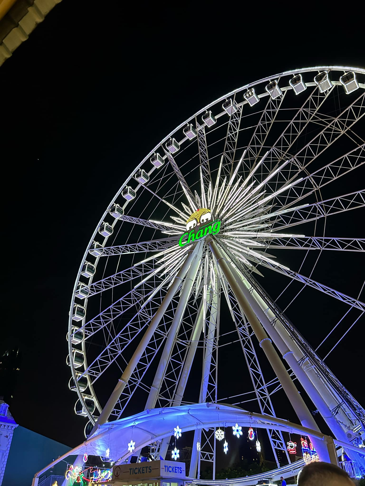

เอเชียทีค
เอเชียทีค เดอะ ริเวอร์ฟร้อนท์ (Asiatique The Riverfront) เป็นศูนย์การค้าแนวราบริมแม่น้ำที่ใหญ่ที่สุดในเอเชีย ตั้งอยู่ริมแม่น้ำเจ้าพระยา ระหว่างซอยเจริญกรุง 72-76 ถนนเจริญกรุง แขวงวัดพระยาไกร เขตบางคอแหลม กรุงเทพมหานคร ภายในโครงการประกอบด้วยร้านค้า ร้านอาหารริมน้ำ นอกจากนี้ยังเป็นที่ตั้งของโรงละครคาลิปโซ่ที่ย้ายมาจากโรงแรมเอเชีย และโรงละครโจหลุยส์ที่ย้ายมาจากสวนลุมไนท์บาซาร์อีกด้วย
Back
